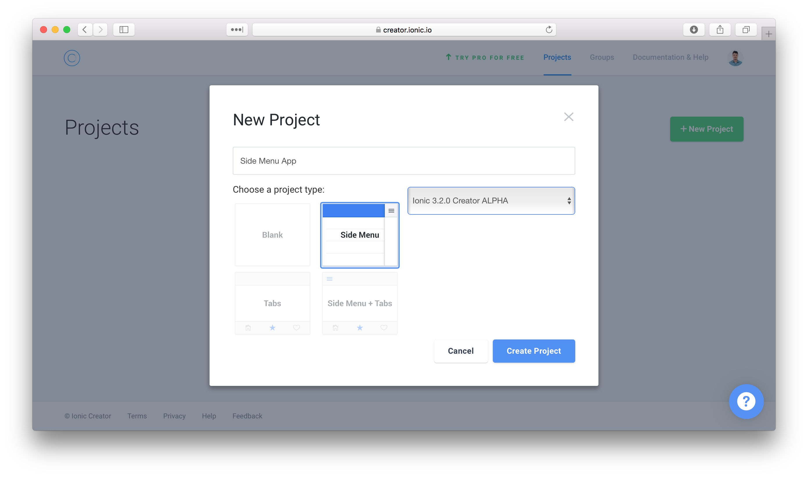

Rewriting the KNoT Gateway client with Ionic
Thiago Figueredo Cardoso
KNoT?
Gateway client?
Rewrite?
Ionic?
The open source meta platform for IoT

KNoT?
Gateway client?
Rewrite?
Ionic?

Current gateway client is a web app
- Mongo
- Express
- Angular (1.x) + Bootstrap
- Node


KNoT?
Gateway client?
Rewrite?
Ionic?
Problems
- No package management or build system
- Old versions of AngularJS and JS (ES5)
- Non-responsive layout
- Fragile back-end
- Lack of developers
Improve current or rewrite?
Replace with an Android app?
Use a hybrid app framework?
React Native, Native Script or Ionic?
Hybrid apps
One code base.
Running everywhere.
Open source
(MIT)
 =
=
 +
+

Application is a web app inside a web view
Getting started
$ npm install -g cordova ionic
$ ionic start MyApp blank
$ cd MyApp
$ ionic serve
Alternative: Ionic Creator

- 

Ionic bootstrap
Configuration files:
- TypeScript
- Node
- Cordova
Ionic bootstrap

Progressive Web App stuff
Ionic bootstrap

Mobile assets:
- Splash
- Icons
- ...
Ionic bootstrap

The application:
- app: main module
- pages: page modules
- theme: theming SASS files
Ionic bootstrap

The ion-nav is the basic navigation component.
Ionic bootstrap
import ...
@Component({
templateUrl: 'app.html'
})
export class MyApp {
rootPage:any = HomePage;
constructor(platform: Platform, ...) {
platform.ready().then(() => {
statusBar.styleDefault();
splashScreen.hide();
});
}
}
Ionic bootstrap
Ionic Blank
The world is your oyster.
Basic page structure is ion-header and ion-content.

The prototype
Ordinary CRUD application:
- Sign in form
- Devices list (read/update)
with gateway search as mobile-only feature.
Main doubts
- How is a form view written?
- How is a list view written?
- How to update list views in real-time?
- How to split mobile-only and common features?
- How to handle different devices (Android, iOS, Desktop) and screen sizes?
Evaluation guidelines
- How to use (or look like) native view components?
- Does the framework provide it out-of-the-box? If not, how easy it is to implement a custom solution?
How is a form view written?
Sign in page
Generate a page:
$ ionic generate page SignIn
It doesn't include the module in any component, must be made manually.
Sign in page
Add the inputs and labels:
...
<ion-label floating>E-mail</ion-label>
<ion-input type="email"></ion-input>
...
ion-input replaces HTML input.
Sign in page
Add the "layout manager":
...
<ion-list>
<ion-item>
<ion-label floating>E-mail</ion-label>
<ion-input type="email"></ion-input>
</ion-item>
...
A list (ion-list) is commonly used to layout forms.
Sign in page
Add the button:
...
</ion-list>
<div padding>
<button ion-button block>Sign In</button>
</div>
...
ion-button is a directive rather than an element.
Sign in page
Make it a form:
...
<form [formGroup]="signInForm"
(ngSubmit)="signIn(signInForm.value)">
...
<ion-label floating>E-mail</ion-label>
<ion-input ... formControlName="email">
...
<button ion-button block type="submit">
...
Regular Angular form.
Sign in page
Disable button when invalid:
...
<button ion-button block type="submit"
[disabled]="!signInForm.valid">
Sign In
</button>
...
Sign in page
Create form and its validation:
export class SignInPage {
private signInForm: FormGroup;
constructor(private fb: FormBuilder) {
this.signInForm = this.fb
.group({
email: ['', [Validators.required,
Validators.email]],
password: ['', Validators.required]
});
}
...
Auth service

Generate a service:
$ ionic generate provider AuthService
It adds the provider to application module providers' list
Auth service
Create sign in/out methods:
@Injectable()
export class AuthService {
...
signIn(credentials): firebase.Promise<any> {
return this.afAuth.auth
.signInWithEmailAndPassword(
credentials.email,
credentials.password);
}
signOut(): ...
Sign in page
Connect with auth service:
export class SignInPage {
...
constructor(private auth: AuthService, ...
}
...
signIn() {
this.auth.signIn(credentials)
.then(() => this.onSignInSuccess(),
() => this.onSignInFailure());
}
...
Sign in page
Act on success (events):
export class SignInPage {
...
constructor(private events: Events, ...
}
...
onSignInSuccess() {
this.events.publish('auth::success');
}
...
or...
Sign in page
Act on success (navigate):
export class SignInPage {
...
constructor(private navCtrl: NavController, ...
}
...
onSignInSuccess() {
this.navCtrl.push(DevicesPage);
}
...
Sign in page
Create a loading dialog:
export class SignInPage {
...
constructor(private ldCtrl: LoadingController, ...
}
...
showLoading() {
this.loading = this.ldCtrl.create({
content: 'Signing in...',
dismissOnPageChange: true
});
this.loading.present();
}
...
Sign in page
Create an error dialog:
export class SignInPage {
...
constructor(private alertCtrl: AlertController, ...
}
...
showError() {
const alert = this.alertCtrl.create({
message: 'Invalid credentials. Try again.',
buttons: ['OK']
});
alert.present(prompt);
}
...
Sign in page - Summary
How is a list view written?
How to update list views in real-time?
Devices page
Add a header to the list:
...
<ion-list>
<ion-list-header>
'Devices'
</ion-list-header>
...
Devices page
Add a spinner to the header:
...
<ion-list>
<ion-list-header>
'Devices'
<ion-spinner item-end></ion-spinner>
</ion-list-header>
...
Devices page
Change the header title based on current state:
...
<ion-list>
<ion-list-header>
{{ (hasAllowedDevices | async) ?
'Other Devices' :
'Devices' }}
<ion-spinner item-end></ion-spinner>
</ion-list-header>
...
Devices page
Add the list items:
...
<ion-list>
...
</ion-list-header>
<button ion-item detail-none
*ngFor="let device of notAllowedDevices
| async">
{{ device.name }}
</button>
...
Devices page
Show the other list when not empty:
...
<ion-list
*ngIf="(hasAllowedDevices | async)">
<ion-list-header>
My Devices
</ion-list-header>
...
Devices page
Add details to the list item:
...
<ion-list
...
<button ion-item *ngFor="...">
{{ device.name }}
<ion-note item-end>
{{ device.online ?
'Online' :
'Offline' }}
</ion-note>
</button>
...
Devices service
Get data from the back-end:
...
@Injectable()
export class DevicesService {
private devices: FirebaseListObservable<any[]>;
...
ngOnInit() {
this.devices = db.list('/devices');
}
get allowedDevices(): Observable<any[]>
get notAllowedDevices(): Observable<any[]>
setDeviceAllowed(device, allowed): void
...
Devices page
Connect with the service (ngOnInit):
...
allowedDevices: Observable<any[]>;
...
constructor(devService: DevicesService ...
ngOnInit() {
this.allowedDevices = this.devService
.allowedDevices;
...
this.hasAllowedDevices =
this.allowedDevices
.map(d => d.length > 0);
}
...
or...
Devices page
using Ionic's page lifecycle hooks:
...
allowedDevices: Observable<any[]>;
...
constructor(devService: DevicesService ...
ionViewDidLoad() {
this.allowedDevices = this.devService
.allowedDevices;
...
}
...
Devices page - Summary
How to split mobile-only and common features?
Gateways page
Gateways page
Choose initial page based on platform:
...
ngOnInit(): void {
this.platform.ready().then(() => {
if (this.platform.is('cordova')) {
this.openGatewaysPage();
} else {
this.openSignInPage();
}
this.statusBar.styleDefault();
this.splashScreen.hide();
});
...
Gateways service
Install the zeroconf plugin:
$ ionic cordova plugin add cordova-plugin-zeroconf
$ yarn add @ionic-native/zeroconf
Gateways service
Import the plugin:
import { Zeroconf } from '@ionic-native/zeroconf';
...
@Injectable()
export class GatewaysService {
...
constructor(zeroconf: Zeroconf ...
Gateways service
Use the plugin:
...
export class GatewaysService {
...
start(): void {
this.zeroconf
.watch('_knot._tcp.', 'local.')
.subscribe(result =>
this.ngZone.run(() => {
// update observable
...
}));
...
Running on device
To run on the target device:
- Setup Cordova for the target environment.
- Run:
$ ionic cordova run <ios|android>
Development related options:
- -l: enables live reloading
- -c: prints console logs to terminal
- -s: prints dev server logs to terminal
Debugging on device
With Cordova Extension for VSCode it is possible to debug the applicaton.
This is recommended in the Ionic blog.